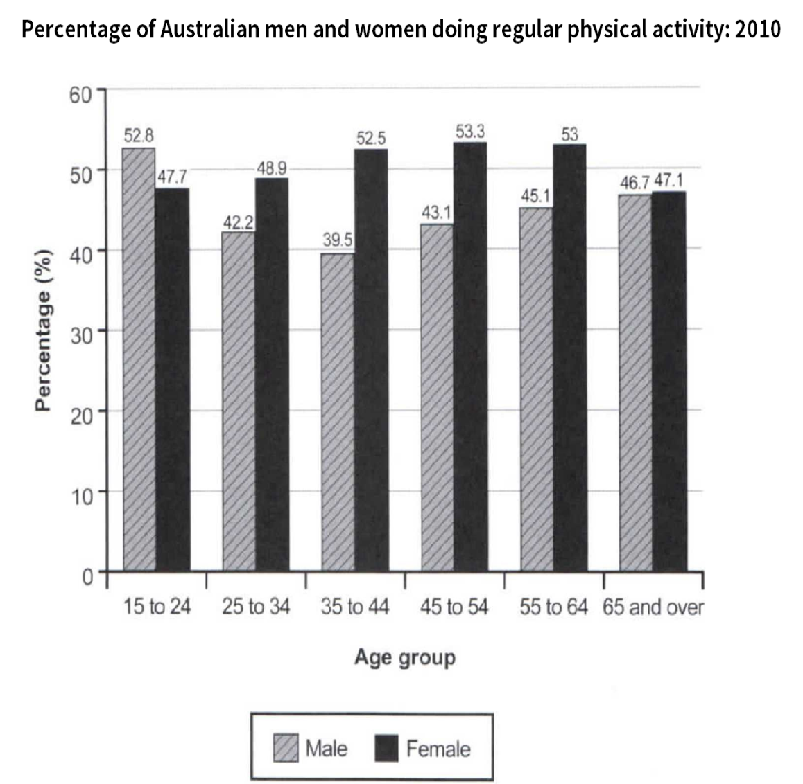

Task 1 — Australian physical activity by age
The bar chart below shows the percentage of Australian men and women in different age groups who did regular physical activity in 2010. Summarise the information by selecting and reporting the main features, and make comparisons where relevant.

The bar chart compares the percentage of Australian men and women in six age groups who did regular physical activity in 2010.
Overall, women in most adult age groups were more active than men, though the pattern reversed for the youngest group. Male activity was highest among teenagers and young adults before declining, while female activity stayed steady from the twenties through to the fifties.
Looking first at the gender gap, women outnumbered men in every group except 15 to 24, where 52.8% of men were active against only 47.7% of women. The widest gap appeared among 35- to 44-year-olds, with 52.5% of women exercising regularly compared with just 39.5% of men, a difference of around 13 percentage points. Women also led in the 25-34, 45-54 and 55-64 brackets.
In terms of age, male activity peaked at 52.8% in the 15-24 group, dropped to 39.5% among 35- to 44-year-olds and recovered to roughly 46% from 55 onwards. Female activity, in contrast, stayed between 48% and 53% from 25 through 64, slipping only to 47.1% at 65 and over, where the two genders almost converged.
TA / TR：覆盖所有 6 个年龄段与男女对比，关键数字（52.8 / 47.7 / 52.5 / 39.5 / 47.1）准确呈现；最高/最低值、最大性别差（35–44 组约 13 个百分点）以及唯一的"反常"年龄段（15–24）都点到。
CC / LR / GRA：四段式（Introduction → Overview → Body 1 性别差 → Body 2 年龄走势），衔接以 Looking first / In terms of / By contrast 推进；词汇偏稳，无明显搭配错误；句式简单句与复合句交替，长句控制在 25 词左右，标点无漏。
physical activity— 体育活动age group / age band— 年龄段gender gap— 性别差异outnumber— 数量上超过peak / dip / recover— 达峰 / 下滑 / 回升converge— 趋同 / 接近proportion / percentage— 比例regularly— 定期地by contrast— 相比之下roughly / approximately— 大约